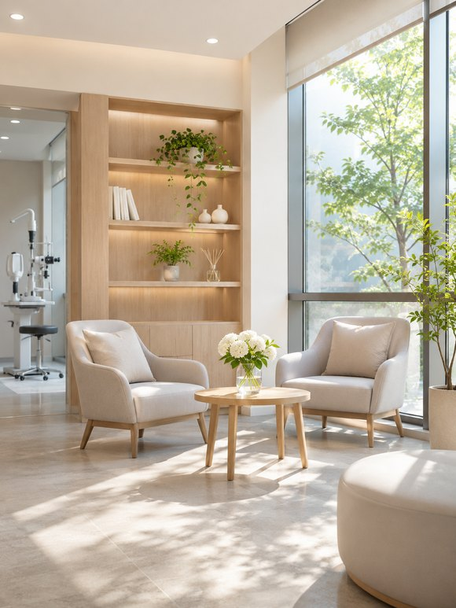
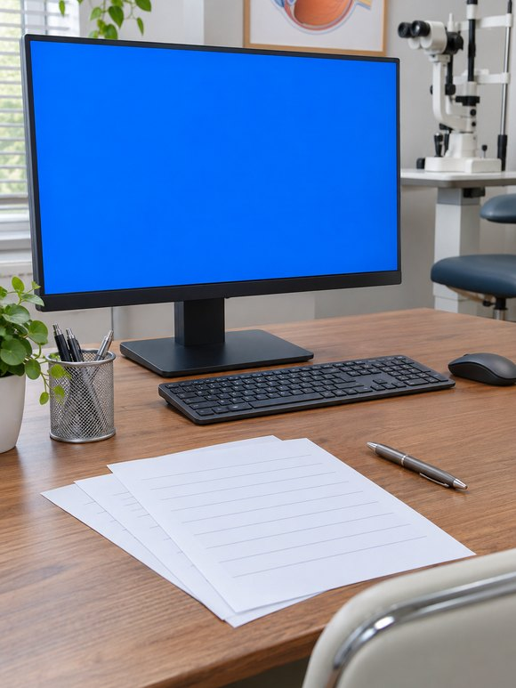

제 돈으로 스마일라식을 받아 본 후기를 적어 봐요!
- 윤**
- 수술일 2025.11.18
리뷰 내용
- 교정전
- 교정후
안녕하세요, 제가 겪은 검사와 수술 과정을 적어볼게요.
서울까지 스마일 수술을 받으러 온 이유는?
① 가족의 경험
서울에 사는 사촌 언니를 비롯해 형부, 동생도 차례로
같은 곳에서 라식이나, 라섹을, 렌즈삽입을 받았다는 말을 듣고
수술 뒤 큰 불편 없이 지내고 있어요.
저도 마음을 정했어요.
가족 이야기를 듣고 저도 상담을 결심했어요.ㅎㅎ
② 검사와 수술을 하루에
저처럼 지방에서 올라오는 사람은 검사와 수술 날짜가 따로면 부담돼요.
여러 번 오가기 번거로울 때~ 검사부터 수술까지 이어져
시간을 아낄 수 있었고 + 비용 부담도 덜었어요ㅎㅎ
③ 의료진 경험
상담 중에 원장님들 시력교정 진료 20년경험과
경력도 자세히수술 경험과 의료진에 관해 궁금한 점을 물어봤어요.!!
지하철로 찾아가기 수월해 방문할 때 부담이 덜했어요..
멀리서 왔지만 하루에 검사를 마쳐 편했어요.!!
직원분들이 순서를 차분히 알려주셨어요.
예약을 확인한 다음
접수할 때 기본 정보랑 개인정보 동의서를 썼어요.
잠시 기다렸다가 시력 검사를 받으러
이름을 불러 주셔서 검사실로 이동했어요.

클리어뷰안과
이 사진은 대기 공간에서 찍었어요.
의자와 테이블이 많아 기다리기 편했어요.
대기 중에도 불편하지 않게 쉬었어요.
검사를 시작했어요.
한쪽 어두운 곳에서 검사를 받았어요.
어두운 곳에서 시력 검사를 진행했어요.
그 덕분에 더 정확히 확인할 수 있었던 것 같아요.
검사실마다 담당 직원이 안내해 주셔서
다음 순서를 기다리는 시간이 길지 않았어요.
검사실 안은 촬영할 수 없어 사진은 없고
시력과 안압, 눈물 상태 등 여러 검사를 차례로 받아 보면서 제 눈 상태를 확인했어요.
검사할 항목이 많아 진료에 거의 두 시간이 걸렸어요.

검사를 마친 뒤 상담실에서 결과 설명을 들었어요.
상담 때 검사 결과를 차근차근 설명해주셨어요.
검사에서 근시와 난시, 각막 두께를 확인했습니다.
검사 결과 제 눈은 스마일 방식으로 수술할 수 있다고 하셨어요.
각막 두께 결과를 들은 뒤 앞으로 관리할 점과 추가로 확인할 사항도 안내받았어요.
더 살펴볼 내용이 없기를 바랐지만, 무엇보다 별일 없이 지내는 게 제일 좋겠다고 생각했어요.
제가 새롭게 알게 된 내용은
검사에서 밤에 동공이 크게 열리는 편이라고 들었어요.
빛 번짐과 눈부심도 상담했어요.
어쩐지 밤 운전이나 터널 운전이 좀 힘들었는데,
검사 결과를 보고 불편했던 이유를 알게 돼서 좋았어요.
밤에 운전할 일이 있으면 남편에게 부탁하기로 했고, 저는 조수석에서 편히 이동했어요.
시력교정 수술을 결정하기까지
상담 후 스마일 수술을 결정했어요.
받은 안약은 알려 주신 대로 시간 맞춰 넣었어요.
안약과 항생제, 인공눈물 등 여러 약을 안내받았어요.
안약값은 약국에서 따로 냈어요.
자가혈청 안약을 준비할 수 있도록 약을 처방받았어요.
안약 넣는 순서도 종이에 적어 주셔서 헷갈리지 않았어요.
가방이랑 소지품은 보관함에 넣어 두고 들어갔어요.
의료진에게 수술을 받았어요.
진행에 앞서 동의서 내용을 확인하고
태블릿 영상으로 수술 과정을 확인했어요.
태블릿에서 수술 설명 영상을 시청한 뒤 궁금한 내용을 확인하고 서류에 서명했어요.
작성한 서류를 안내받은 곳에 제출했어요.
수술 전에 간단히 진료를 받고 마취 안약을 넣었어요.!
잠시 뒤 수술실로 이동했고 차례를 기다렸어요
대기 공간에서 마취 안약을 다시 넣었어요..
마취가 진행되면서 눈 감각이 차츰 둔해졌어요낯설면서도 신기했어요
처음 겪는 감각이라 시간이 느리게 가는 것처럼 느껴졌어요.
10~20분 정도 기다린 뒤 수술실로 들어갔어요.
기기에 누워 안내에 따라 시선을 고정했고
간호사님과 원장님이 하라는 대로 하시면 돼요.
직원분들이 다정하게 응대해 주셔서 긴장이 덜했고, 편한 마음으로 수술을 준비할 수 있었어요.
너무 긴장하면 수술이 힘들어질 수 있으니,
담담하게 원장님과 간호사님 말씀대로 따라 하면 돼요.
안내에 집중하니 수술이 금방 끝났어요.
긴장했지만 설명을 들으며 차분히 따라갔어요.
제 체감으로는 수술이 10분 정도 걸린 것 같아요.
검사에 비해 수술 과정은 제게 짧게 느껴졌어요.
수술을 마친 뒤 대기 장소에서 20분쯤 쉬었어요.
잠시 쉬고 의료진 진료를 다시 받았어요.
이때부터 마취가 풀리면서 조금씩 아프기 시작했어요.
마친 뒤에는 눈이 시린 느낌이 들기 시작했어요.
감기가 거의 나아갈 무렵이라 콧물도 났고, 수술을 앞두고 컨디션이 조금 신경 쓰였어요.
이틀 뒤 상태를 보러 다시 오기로 예약했어요!
약을 어떻게 쓰는지와 주의할 점도 들었어요!
안내를 듣고 집으로 돌아갔어요.
당일에는 직접 운전하지 말고 모자나 선글라스를 준비하라는 안내를 받고 그대로 챙겼어요.
병원에서 나온 뒤 통증이 심해지기 시작했어요.
눈이 시리고 눈물이 나며 따끔했어요.
눈을 뜨지도 감지도 못할 만큼 너무 아팠어요ㅠ
다른 방식과 통증을 비교하기는 어렵지만
제 경우에는 받은 수술의 회복 과정을 겪었어요.
눈을 거의 뜨지 못할 만큼 불편했어요.
이후 경과를 확인하기 위해
대중교통으로 이동하기 편해서 긴장한 마음을 조금 덜고 찾아갔어요.
중간중간 약을 넣는 게 조금 힘들긴 했어요.
점안약을 챙겨 넣으며 회복을 살폈어요.
혼자 방문하긴 했지만 수술 뒤 이동을 생각하면 동행이 있었으면 더 편했겠다고 느꼈어요.
수술 후 다섯 시간쯤 지나자 통증이 거의 사라졌고
수술을 받은 날 밤부터 흐릿함이 조금씩 걷히는 느낌이 들었어요.
이틀 뒤 병원에 다시 방문했어요.
수술 당일에는 보지 못했던
복도에서 보이는 건물 풍경이 멋져서 찍어 봤어요^^
검사 결과를 확인하고
회복 상태에 대한 설명을 들었어요.
안약을 챙기고 주의 사항도 지켰어요.
오늘 수술 3주째라 경과를 보러 다녀왔어요.
며칠 뒤에도 경과 확인을 위해 다시 방문했고
간단히 시력을 확인한 뒤 의료진과 상담했어요.
제 상태를 살펴본 뒤 안내를 받았어요.
경과 진료에서 빛 번짐이 있다고 말씀드렸고, 조금씩 나아질 수 있다는 설명을 들었어요.
의료진과 직원들이 늘 친절하게 설명했어요.
다음 방문 때는 한결 편안한 마음이었어요.
출처 : 환자 블로그 후기
- 교정전
- 교정후